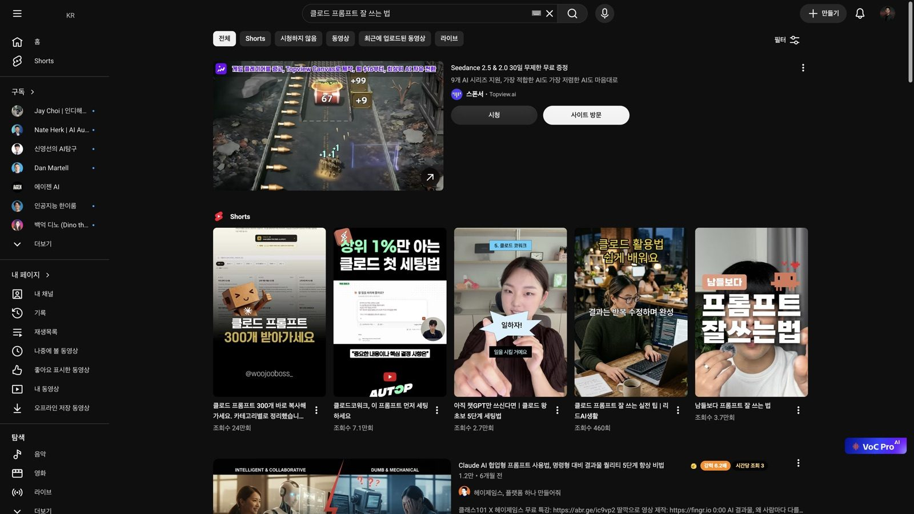
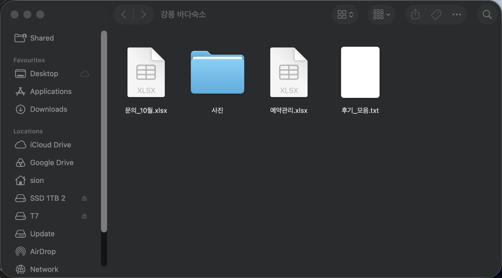
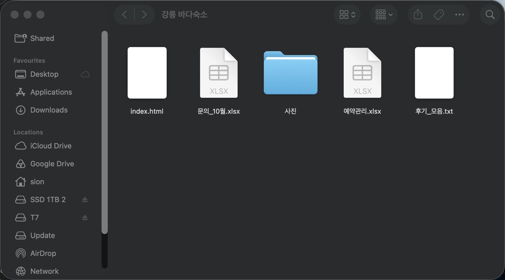
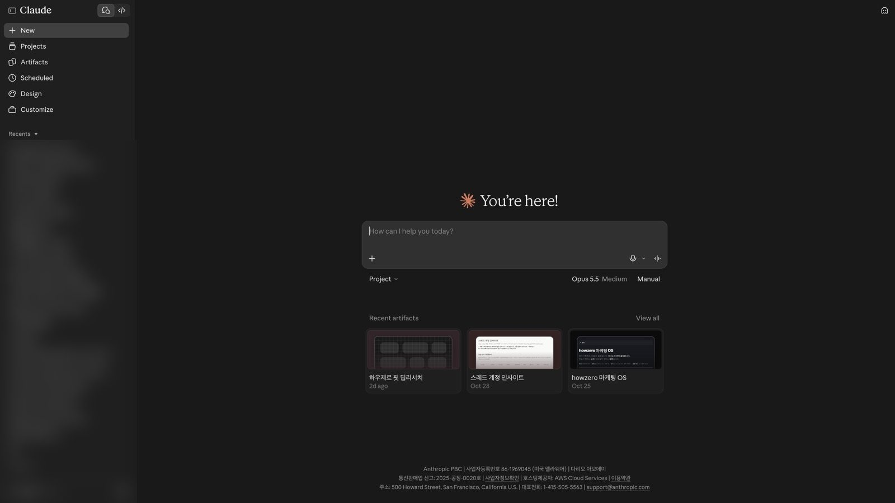
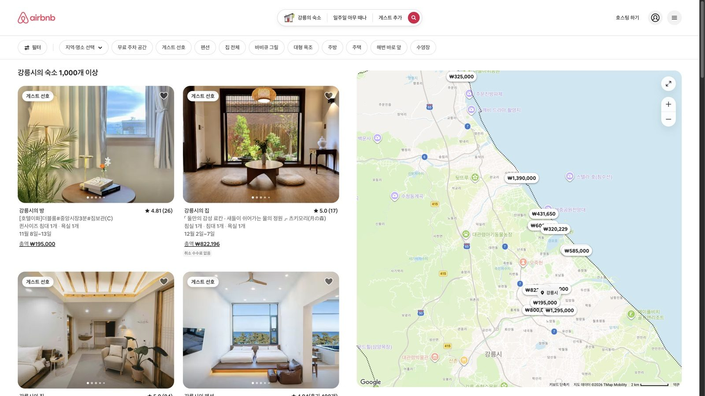
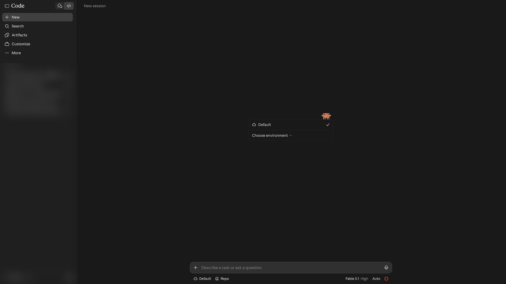
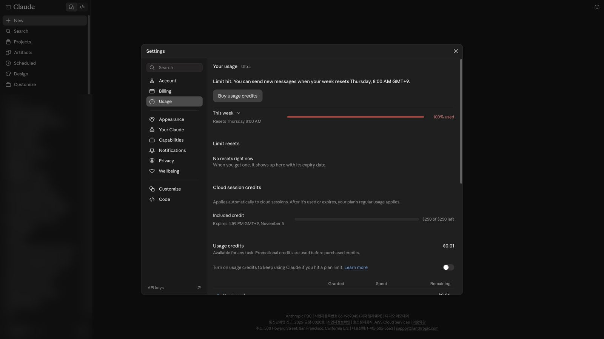
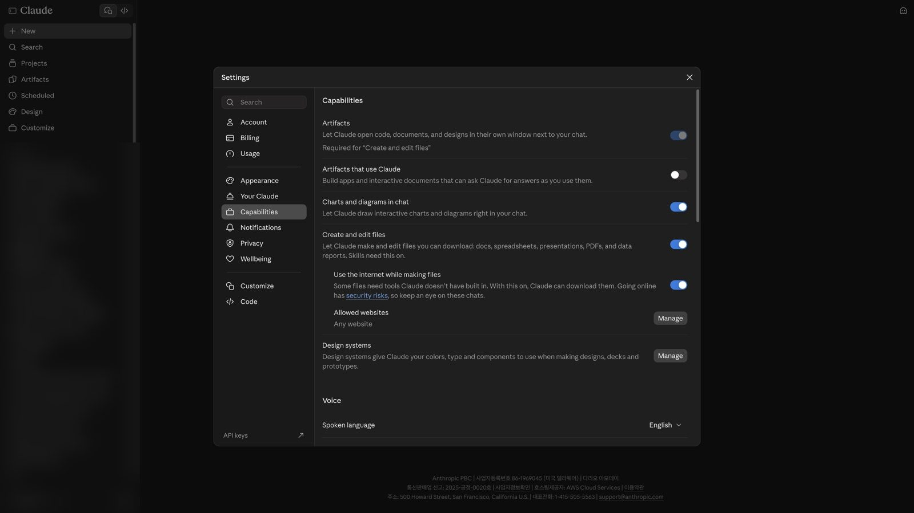

인트로 v3 편집 완료
intro_v3.mp4(1.3배속, 3:33). 새 규칙으로 바꿀 곳만 아래에
“만약 여러분이 클로드를 깔긴 했는데, 아직 채팅창에 물어보고 답 복사해서 옮기는 것만 하고 계시다면, 오늘 영상이 딱 맞습니다. 이 영상 하나로 설치부터 시작해서, 클로드한테 일을 맡겨 놓고 저는 딴 일 하는 데까지 같이 가 볼 거거든요. 요즘 클로드 잘 쓰는 법 찾아보면 다들 "…”
편집 기획 v1 · 2026-11-04 · 대본 OpenFunnel 86 v1(331줄, 약 37분)
섹션 19개 × 비트 92개. 규칙 두 개를 먼저 적용했어요: ① 폴더가 나오면 그린 폴더 대신 실제 파인더 ② 클로드·웹사이트는 Aside로 실제로 들어가 캡처한 뒤 그 위에 모션. 아래 예시 그림은 전부 오늘 실제로 찍은 화면이고, 하늘 테두리가 모션으로 강조할 자리예요.
말로만 하면 안 와닿는 개념(사다리·작업 기억·레시피·심부름·도구). 같은 사다리 장면을 7번 재사용해 '지금 몇 층'을 몸으로 기억하게.
표·비교·순서·카드(3칸 공식, 모드 4개, 명령어 표, 과제 카드). 롱폼 스킬 템플릿 그대로.
"어디를 누르냐"가 나오는 웹·설정 화면. 실제 캡처 위에 스폿·줌·빨강 경로 라벨.
파일이 들어가고 생기는 순간. 진짜 '강릉 바다숙소' 폴더로 녹화.
앱 안에서 일하는 과정. 데스크탑에만 있는 기능(세션 레일·원격 조종)은 녹화로만.
intro_v3.mp4(1.3배속, 3:33). 새 규칙으로 바꿀 곳만 아래에
“만약 여러분이 클로드를 깔긴 했는데, 아직 채팅창에 물어보고 답 복사해서 옮기는 것만 하고 계시다면, 오늘 영상이 딱 맞습니다. 이 영상 하나로 설치부터 시작해서, 클로드한테 일을 맡겨 놓고 저는 딴 일 하는 데까지 같이 가 볼 거거든요. 요즘 클로드 잘 쓰는 법 찾아보면 다들 "…”
지금은 새로 그린 그림. 실제 유튜브 검색 결과 캡처를 종이처럼 오려 붙이는 쪽 검토
“요즘 클로드 잘 쓰는 법 찾아보면 다들 "프롬프트를 잘 쓰세요" 이러잖아요. ”
남의 썸네일 → 흐림 또는 짧게만

이런 영상들지금은 3D 책상에 회색 상자 폴더. 책상은 두고 그 위에 실제 파인더 창 '강릉 바다숙소'가 툭 놓이게 바꾼다
“그 1시간을 클로드한테 넘기는 게 맡기는 거예요. 거창한 거 아니에요. 폴더 하나 열어 주고, 목표랑 자료를 넘기고, 끝난 결과물을 받는 거죠. 새로 온 직원한테 책상 하나 내주는 것처럼요. 말로만 하면 감이 안 오니까 바로 예시로 보여 드릴게요.”
인트로 B[8]·B[9]

자료가 들어갈 폴더실제 파인더 창에 문의·후기·사진 파일이 하나씩 떨어지며 개수 카운터(지금 카운터는 유지)
“그리고 친구가 그동안 받은 문의랑 후기, 숙소 사진을 폴더 하나에 넣고, 클로드한테 그 폴더를 열어 줘요. "이걸 보고 손님이 예약을 결정한 이유 딱 하나만 짚어 줘."”
인트로 B[14]
같은 파인더 창에 index.html 아이콘이 새로 뜨는 순간을 하늘 테두리로
“그러면 폴더 안에 진짜 웹사이트 파일이 생겨요. 그동안 저는 복사 한 번 안 했고요.”
인트로 B[17]

새로 생긴 웹사이트 파일왼쪽 위 채팅·코드 두 아이콘에 동그라미. 데스크탑 앱 녹화가 나오면 그걸로 교체
“그럼 이 책상은 어디 있냐? 최근에 크게 바뀐 클로드 데스크탑 앱의 '코드' 탭이에요. 탭이 채팅이랑 코드 두 개로 정리됐는데요, 채팅이 물어보는 곳이면 코드는 맡기는 책상이에요. 이름은 '코드'지만 지시는 그냥 우리말로 해요.”
개인 대화 목록은 흐림 처리

채팅 / 코드3D 6층 사다리(같은 장면 재사용, 카메라 고정). 해당 층만 하늘색으로 켜지고 층 이름 라벨. 말에 맞춰 1층→6층 이름이 하나씩 켜짐(말 걸기·내 자료·물건 만들기·기억·앱 연결·나 없이)
“사다리는 이렇게 생겼어요. 1층은 말 걸기예요. 설치하고, 첫 지시 해 보고, 모드랑 모델, 그러니까 어떤 방식으로 어떤 클로드를 쓸지 고르기까지죠. 근데 말만 걸면 클로드는 우리 일을 모르잖아요. 그래서 2층은 내 자료 주기예요. 파일, 사진, 웹 검색으로 넘기는 거죠. 그럼 결…”
05편 s04-goal-stairs 계단 패턴 재사용
에어비앤비 강릉 검색 캡처 위에 라벨 '예시 = 에어비앤비 숙소 하는 친구'
“예시는 아까 그 친구 숙소 일로 쭉 갈게요. 여러분은 자기 일로 바꿔서 해 보세요. 그래야 훨씬 빨리 늘거든요.”
실제 남의 숙소 사진 → 흐림

이런 숙소사다리 층 옆에 '과제' 스티커가 하나씩 붙음
“그러라고 층마다 끝에 과제를 드릴게요. 따라 하시면 영상 끝날 때 세팅이 다 돼 있을 거예요. 이미 클로드 쓰시는 분은 몇 층인지 보고 다음 층부터 보셔도 돼요. 챕터는 설명란에 있습니다.”
화면 어둡게 → 타자 카드(롱폼 스킬 chapter)
“1층은 맨 아래, 클로드랑 말이 통하는 자리를 만드는 층이에요. 일을 맡기려면 자리부터 있어야 하잖아요.”
실제 다운로드 페이지 캡처 → 'Download for macOS' 스폿 + 빨강 경로 라벨, 이어서 Windows 줄
“먼저 claude.com/download 에 들어가서 데스크탑 앱을 받으세요. 맥이랑 윈도우 둘 다 있고요, 설치하고 계정 만들면 됩니다.”
오른쪽 아래 'Claude Duet' 팝업은 잘라냄
실제 요금제 페이지 캡처 → 프로 카드 스폿
“근데 코드 탭은 무료 요금제에선 안 열리거든요, 유료로 올리라고 나와요. 제일 싼 프로가 월 결제로 20달러, 1년 결제하면 한 달에 17달러 꼴입니다. 뒤에서 말씀드릴 영상 만드는 모션이랑, 아직 시험판이라 대기 신청이 필요한 기능 몇 개만 빼면, 오늘 건 대부분 프로에서 되거든요.”
가격 바뀜: 대본 '월 20달러·연 17달러' → 지금 월 결제 22달러 · 연 결제 월 18달러(2026-11-04 캡처). 대사 수정 필요
데스크탑 앱 녹화 확대. 녹화 전엔 웹 캡처로 자리 표시
“설치됐으면 앱을 열어 볼게요. 왼쪽 위에 아까 본 채팅이랑 코드, 두 탭이 있죠. 오늘 쓸 건 코드 탭이에요. 채팅과 달리 내 컴퓨터 파일을 직접 건드릴 수 있거든요.”

채팅 / 코드실제 파인더 녹화: 새 폴더 → 이름 '강릉 바다숙소' 타이핑
“다음은 일할 곳을 정해 줄 차례예요. 바탕화면에 빈 폴더를 하나 만드세요, 이게 제일 중요해요. 클로드는 이 폴더 안에서 파일을 만들고 고치거든요. 친구 숙소 일이면 자료를 여기 모으는 거죠.”
폴더 이름 '강릉 바다숙소'로 제안(대본 [폴더 이름 정함 필요])
코드 탭 입력창 아래 '로컬' 스폿 → 폴더 선택 창(실제 파인더 선택 창) → 신뢰 창
“코드 탭 입력창 아래에서 '로컬'을 누르세요. 내 컴퓨터에서 일한다는 뜻이에요. '폴더 열기'로 방금 만든 폴더를 고르시면 돼요. 폴더를 열면 이 폴더를 믿어도 되냐는 창이 떠요. 빈 폴더니까 믿는다고 하시면 됩니다.”
인트로 3D 책상에 실제 파인더 창이 얹힌 그 장면 다시(재사용)
“코드 탭에 폴더까지 열어 준 거, 이게 아까 말한 그 책상이에요. 클로드한테 일할 자리를 내준 거죠.”
코드 탭 입력창에 한 줄 지시 치기
“근데 자리만 내주고 할 일을 안 주면 클로드는 앉아만 있겠죠. 이제 첫 일을 줄 거예요. 코드 탭 입력창에 하고 싶은 걸 우리말로 치고 엔터 누르면 돼요. 친구 숙소로 예를 들면 이렇게요. "우리 에어비앤비 숙소 웹사이트 하나 만들어 줘. 예약 문의 받는 칸도 넣어 줘." 인트로에…”
가운데 큰 글자 카드, '결과'만 하늘
“요령이 하나 있어요. 단계 말고 받고 싶은 결과를 말하세요. 어떤 파일을 어떤 순서로 만들지는 클로드가 알아서 찾거든요.”
빈 칸 세 개 → 말에 맞춰 한 칸씩 채워지며 켜짐(롱폼 tree)
“상황, 할 일, 모양이에요. 상황은 내가 누구고 뭘 하는지예요. "강릉에서 에어비앤비 숙소 하나 하는데, 손님은 대부분 커플이랑 가족이고, 바다 보이는 테라스가 자랑이야." 할 일은 뭘 원하는지죠. "숙소 웹사이트 첫 화면 만들어 줘." 모양은 결과물이 어떻게 생겨야 하는지예요. …”
대사 문장 그대로 칸에
한 줄 지시 결과 vs 3칸 지시 결과 분할 화면 [녹화 후 채움]
“그럼 "웹사이트 만들어 줘"만 친 거랑 3칸 채운 거, 나란히 볼게요. 바꾼 건 제가 준 정보뿐이에요. [녹화 후 채움: 두 결과 차이 한 줄] 정보 세 칸 넣은 것만으로 이렇게 달라져요. 다만 제 지시를 똑같이 치셔도 똑같은 결과는 안 나와요.”
실행 중 멈춤 버튼 스폿 → 입력창에 고칠 말
“마음에 안 들면 새로 시작하지 말고 그 자리에서 고쳐 달라고 하세요. "좋은데 절반 길이로 줄이고, 테라스 얘기는 남겨 줘" 이렇게요. 클로드가 이 대화에서 한 얘기를 기억하거든요. 일하는 도중에 방향이 틀렸다 싶으면, 그때 뜨는 멈춤 버튼을 누르거나 고칠 말을 쳐서 보내도 돼요.”
실제 코드 탭 캡처에서 아래 줄 세 곳 스폿(Auto · Fable 5.1 · High)
“그래서 1층 마지막은 이걸 정하는 거예요. 입력창 아래에 고를 게 세 개 있어요. 모드, 모델, 생각 깊이요.”
웹 코드 탭에 'Auto mode is now default' 공지가 떴음 → 82줄 '처음엔 수동·계획'과 맞는지 한 줄 덧붙일지 검토
수동 → 편집 허용 → 계획 → 자동, 가로 게이지가 오른쪽으로 갈수록 '혼자' 칸이 참. 자동엔 '지켜보는 AI' 방패 칩
“먼저 모드는 클로드가 묻지 않고 혼자 얼마나 진행할지를 정하는 거죠. 수동은 뭘 바꿀 때마다 물어봐요. 편집 허용은 파일 고치는 건 알아서 하고, 그 밖의 일은 물어봐요. 계획은 먼저 살펴보고 계획표를 짜 와요. 제가 승인하기 전엔 손을 안 대요. 자동은 거의 혼자 일해요. 대신 …”
분식 그릇(하이쿠) → 코스 접시(오퍼스·페이블), 오른쪽 하나만 하늘. 이름 라벨은 3D에 붙임
“얼마나 혼자 하게 할지는 정했죠. 다음은 그 일을 어떤 머리가 할지, 모델이에요. AI 두뇌를 고르는 거죠. 하이쿠가 제일 싸고 빨라요. 소네트가 중간이고, 오퍼스가 비싸지만 훨씬 똑똑해요. 맨 위엔 페이블이 있고요. 쉽게 말하면 분식집이랑 코스 요리예요. 분식집은 빠르고 싼데 맛…”
가격 숫자는 대사에 없으니 크기로만
낮음·중간·높음, '중간'에서 멈춤
“마지막으로 모델 메뉴 옆에 있는 생각 깊이는, 답하기 전에 얼마나 오래 생각할지예요. 단계가 많고 꼼꼼해야 하는 일이면 올리고, 나머진 중간이면 충분해요.”
실제 사용량 화면 캡처 → '이번 주' 막대 스폿 → 3D '사용량이 다시 참' 인서트
“왜 골라 쓰라고 하냐면, 이 세 개가 다 사용량이랑 묶여 있거든요. 요금제마다 쓸 수 있는 양이 정해져 있고, 일정 시간마다 다시 차요. 좋은 모델, 높은 생각 깊이를 쓸수록 빨리 줄고요. 한도에 걸려도 고장 난 것도, 날아가는 것도 없어요. 다시 찰 때까지 기다리시면 돼요. 자꾸…”
캡처 속 '100% used·한도 도달'은 오너 실제 값 → 녹화 땐 평소 상태로 다시. 05편 s09-refill-time 재사용

이번 주 사용량과제 카드 공통 틀(층 번호 + 할 일 한 줄)
“1층 과제예요. 빈 폴더 하나 열고, 여러분 회사 일 하나를 3칸으로 시켜 보세요. 처음부터 다시 하지 말고, 앞에서 본 것처럼 두 번 고쳐 보세요.”
과제 카드 6장 같은 틀
3D 6층 사다리(같은 장면 재사용, 카메라 고정). 해당 층만 하늘색으로 켜지고 층 이름 라벨
“자, 2층이에요. 1층 해 보셨으면 아실 거예요. 클로드는 제가 입력창에 친 것만 갖고 일하거든요. 그러니까 제가 안 적은 건 모르는 거죠. 그래서 2층부터는 제 자료를 넘깁니다. 파일, 사진, 인터넷이요.”
실제 파인더 녹화: 바탕화면 엑셀을 '강릉 바다숙소' 창으로 드래그
“코드 탭에선 간단해요. 아까 만든 폴더에 파일을 끌어다 넣으시면 되거든요. 그 친구 숙소 일로 갈게요. 게스트 문의 엑셀을 폴더에 넣고 이렇게 시켜 보죠. "폴더에 있는 문의 엑셀 읽고, 문의 종류별로 몇 건인지 표로 정리해 줘. 제일 많은 불만 세 개도 뽑아 줘."”
[녹화 후 채움]
“[녹화 후 채움: 정리된 표 · 상위 불만 3개]”
왼쪽: 내 손이 옮김(손 아이콘 왕복) / 오른쪽: 클로드가 폴더를 직접 엶. 오른쪽만 하늘
“아니 근데 그거 그냥 엑셀 내용 복사해서 입력창에 붙이면 되는 거 아니야? 되긴 하는데, 그건 제가 옮기는 거잖아요. 폴더에 넣으면 클로드가 직접 열어서 읽어요.”
+ 메뉴 펼침 스폿
“폴더 대신 입력창 옆 더하기 버튼으로 붙이셔도 돼요. 계약서, 단가표, 은행 내역처럼 평소 읽던 문서는 웬만하면 다 읽어요.”
사진 한 장 → 클로드가 짚은 점에 빨간 동그라미가 하나씩
“글자만이 아니라 사진도 봐요. 숙소 사진을 붙이고 이렇게 시키는 거죠. "예약이 더 잘 들어오려면 이 사진 뭘 고치면 좋을까?" 고칠 점을 짚어 줘요. 화면 캡처나 손으로 쓴 메모도 읽고요.”
남의 숙소 사진 쓰지 말 것 → 무료 사진이나 직접 찍은 사진
답 아래 출처 링크 스폿
“근데 파일은 읽어도 오늘 뉴스나 지금 가격은 모르거든요. 그건 인터넷에서 찾아와야 하죠. 그럴 땐 "인터넷 찾아보고 출처도 같이 줘"라고 붙이세요. 그러면 답에 링크가 같이 달려요. 사실이 중요한 일이면 그 출처는 꼭 눌러 보세요.”
채팅 탭 캡처 → 입력창 '+'/도구에서 리서치 켜는 위치 스폿 → 출처 달린 보고서 녹화
“그럼 검색 한 번으로 안 끝나는 큰 일은요? 그땐 채팅 탭으로 가서 리서치 기능을 켜요. 채팅 탭인데도 이건 묻는 게 아니라 조사를 통째로 맡기는 기능이거든요. "강릉 숙소 시장 조사해 줘. 어떤 손님이 오는지, 1박에 얼마 받는지, 작은 숙소들이 어떻게 알리는지, 처음 시작하는 …”
리서치 토글 위치 캡처 추가 필요(오늘은 못 찍음)
“자, 2층 과제예요. 제일 지루한 문서 하나를 폴더에 넣고, 핵심만 정리해 달라고 시켜 보세요. 그때 폴더에 맡기는 게 왜 편한지 감이 와요.”
데스크탑 앱 오른쪽 카드 칸 녹화 + 환경 카드 스폿
“그 전에 하나만요. 클로드랑 하는 대화 하나를 세션이라고 불러요. 그 세션 상태를 보여 주는 게 이번 개편에 새로 생긴 세션 레일이에요. 화면 오른쪽 카드 칸이죠. 안 보이면 오른쪽 위에서 세션 레일 보기를 누르시면 돼요. 맨 위 환경 카드는 이 대화가 어느 폴더에서 일하는지, 제…”
웹엔 세션 레일이 없음 → 데스크탑 녹화만
유리통 바닥에 미리 실린 칸(메모 파일·스킬·커넥터)이 먼저 깔리고, 그 위로 메시지 구슬이 쌓임
“진짜 보셔야 할 건 그 아래 컨텍스트 카드예요. 컨텍스트는 클로드가 이 대화에서 쥐고 있는 작업 기억이에요. 그 기억이 얼마나 찼는지, 뭐가 자리를 차지하는지 보여 주죠. 이 기억을 세는 단위가 토큰인데, AI가 글을 잘게 쪼갠 단위예요. 요즘 클로드는 백만 토큰까지 되는데, 해리…”
05편 s02-token-tubes 재사용. '백만 토큰 = 해리 포터 4권'은 출처 확인 필요
“카드 얘기 마저 하면, 아래쪽엔 연결된 앱 카드랑 이 대화가 만든 파일을 모은 결과물 카드도 있어요.”
대화가 길어질수록 스크롤을 처음부터 다시 훑는 커서 → 카드
“그럼 이 작업 기억이 왜 중요할까요. 클로드는 답할 때마다 이 대화를 처음부터 끝까지 다시 읽어요. 그러니까 대화가 길수록 느려지고, 비싸지고, 보통은 답도 흐려지죠. 그래서 주제가 바뀌거나 새 일을 맡길 땐 새 세션을 여세요. 같은 일은 같은 세션, 새 주제는 새 세션. 이렇게만…”
3D 6층 사다리(같은 장면 재사용, 카메라 고정). 해당 층만 하늘색으로 켜지고 층 이름 라벨
“그래서 3층이에요. 3층부턴 글이 아니라 진짜 쓸 수 있는 물건, 파일이 나오거든요.”
실제 파인더에 xlsx가 생기는 순간 하늘 테두리 → 더블클릭 → 엑셀 계산식 칸 스폿
“그 친구 숙소로 이렇게 시켜 볼게요. "숙소 예약 관리 엑셀 만들어 줘. 날짜, 손님 이름, 인원, 1박 요금 넣고, 매출은 계산식으로, 청소 일정 칸 넣고 예시 예약 여덟 개 채워 줘." 그러면 폴더에 진짜 엑셀 파일이 생겨요. 매출 칸엔 계산식이 들어 있어서 요금만 바꿔도 다시…”
실제 로고 툭툭(롱폼 logo)
“워드 문서, 파워포인트, PDF도 똑같아요. 견적서든 보고서든요. 파일이 크면 몇 분 걸릴 수 있어요. 실제로 만드는 중이라 그래요.”
파일럿 s32는 그린 화면이라 실제 녹화로 교체
“그럼 만든 파일을 고쳐 달라고 하면요? 작업 화면에 초록색 더하기, 빨간색 빼기 숫자가 떠요. 이건 그 파일에 몇 줄을 넣고 몇 줄을 뺐는지 보여 주는 거예요. 대부분은 몰라도 되고, 자세히 보고 싶을 때만 그 숫자를 눌러 보시면 돼요.”
파일럿(봄날반찬 예시)은 옛 예시라 버림
오른쪽 미리보기 → '배경 크림색' 지시 → 바뀌는 순간
“근데 웹사이트는 눈으로 봐야 고칠 데가 보이잖아요. 웹사이트를 만들면 화면 오른쪽에 미리보기 창이 열려서 만든 사이트를 바로 보여 줘요. 그걸 보면서 "배경은 크림색으로, 제목은 더 크게" 이렇게 말로 고치시면 돼요. 페이지를 더 붙이는 것도 말 한마디예요. "주변 맛집 지도 페이…”
내 컴퓨터 미리보기(자물쇠) vs 링크(친구 둘이 같이 봄)
“근데 오른쪽에 열린 이 브라우저 창, 미리보기는 제 컴퓨터에서만 보여요. 친구한테 보여 주고 같이 고치려면 어디서 할까요? 그 자리가 3층 아티팩트예요. 이번 개편에서 크게 늘었거든요. 아티팩트는 링크 하나로 다른 사람이랑 같이 보고 고치는 화면이에요. 팀이나 거래처에 보내고, 댓…”
claude.ai 사이드바 Artifacts·Design 스폿 → 종류별 실제 화면 한 컷씩
“그럼 뭘 만들 수 있냐. 다섯 가지예요. 문서는 구글 독스처럼 같이 쓰는 문서고요. 슬라이드는 발표 자료예요. 파워포인트로 내려받거나 클로드에서 바로 발표할 수 있어요. 디자인은 캔바처럼 SNS 이미지, 웹사이트 시안을 만들어요. 따로 있던 클로드 디자인 사이트는 12월 14일에 …”
종류별 실제 캡처 5장 추가 필요. 'Design 사이트 12/14 종료'는 공식 공지로 확인 필요
실제 설정 캡처에서 그 줄 스폿 → 스위치가 켜지는 모션
“링크를 받은 사람이 거기서 질문까지 할 수 있으면 어떨까요. 화면에 보이는 것처럼 설정에서 기능 메뉴로 들어가, AI 기능이 들어간 아티팩트를 켜면 돼요. 켜면 아티팩트 안에 클로드가 들어가요.”
영문 이름 'Artifacts that use Claude' 확인됨. 한국어 앱 표기는 녹화 때

AI 기능 아티팩트대시보드 녹화 → 질문 입력
“예를 들어 친구 숙소 예약 대시보드를 만들고 "여기 질문창 하나 넣어 줘" 하고 시켜 보는 거예요. 그럼 친구 가족이 "이번 달 예약 제일 많았던 주말 언제야?" 하고 물어볼 수 있죠. 받는 사람은 클로드 코드 몰라도 링크만 열면 돼요. 그래서 같이 일하는 사람이 있으면 이게 제일…”
“3층 과제예요. 매주 손으로 만드는 엑셀이나 문서 하나를 클로드한테 맡겨 보세요. 견적서도 좋고, 재고표도 좋아요.”
3D 6층 사다리(같은 장면 재사용, 카메라 고정). 해당 층만 하늘색으로 켜지고 층 이름 라벨
“자, 4층이에요. 매주 하는 일을 맡기다 보면 세션을 여러 번 새로 열게 되는데요, 그때 문제가 보여요. 2층에서 본 작업 기억은 세션마다 새로 시작하거든요. 그래서 새 세션마다 클로드가 이 일을 처음 보는 거죠. 친구 숙소가 어떤 곳인지, 손님한테 쓰는 말투는 어떤지 매번 다시 …”
녹화 + 실제 파인더에 CLAUDE.md 아이콘 → 스페이스바 미리보기로 열기. '새 직원 책상 메모' 쪽지 라벨
“제일 쉬운 방법이 CLAUDE.md라는 파일이에요. 클로드가 세션을 시작할 때마다 맨 먼저 읽는 메모장이거든요. 새 직원 책상에 붙여 둔 업무 메모 같은 거예요. 입력창에 슬래시 이닛, /init 치시면 이 폴더에서 한 걸 보고 클로드가 알아서 만들어 줘요. 거기에 "강릉 바다 앞…”
개인정보 가림
“[사례 필요: 오너 CLAUDE.md에 실제로 적어 둔 규칙 한 줄 — 정본(_owner/) 등록 필요]”
_owner/에 먼저 등록
실제 캡처 Memory 칸 스폿 → 'Import memory from other AI providers' 스폿
“CLAUDE.md는 제가 적어 주는 거고요, 반대 방향도 있어요. 메모리예요. 채팅 쪽 기능인데요, 클로드가 대화하면서 저에 대해 알게 된 걸 스스로 기억해 두는 거예요. 뭘 기억했는지는 설정의 메모리 메뉴에서 다 볼 수 있고, 고치거나 지울 수도 있어요. 챗GPT를 쓰시던 분이면…”
메뉴 이름이 '메모리'가 아니라 'Your Claude' 안에 있음 → 대사 191줄 위치 표현 확인
“기억에 남기기 싫은 일이면 채팅의 시크릿 채팅을 쓰면 돼요. 저장도 안 되고 기억에도 안 남거든요.”
녹화 + '건강검진' 스티커
“CLAUDE.md랑 설정이 쌓이면 점검도 해 줘야겠죠. 그래서 명령어 하나 더, 슬래시 닥터예요. 제 설정이랑 CLAUDE.md를 점검해 주고, 문제가 있으면 고쳐 준대요. 건강검진이죠.”
점 세 개 → 새 섹션 → '친구 숙소'
“이렇게 클로드가 저를 기억하면 맡기는 일이 확 늘죠. 그만큼 세션도 쌓여서, 세션 목록이 있는 왼쪽 사이드바가 금방 지저분해져요. 그래서 섹션이라는 게 생겼어요. 세션을 묶어 두는 폴더예요. 세션 옆 점 세 개를 누르고 새 섹션으로 옮기기를 눌러 이름을 짓고, 다른 세션을 끌어다 …”
구름 노드 아래 세션 3개 + 규칙 칩, '노트북 닫아도 돎'. 경고 칩 '회사 파일 → 앤트로픽 서버'
“근데 섹션은 정리만 해 주잖아요. 한 단계 더 나간 게 코드 탭에 새로 나오고 있는 클로드 코드 프로젝트예요. 프로젝트는 세션 여러 개를 묶고 규칙까지 같이 쓰는 작업 공간이에요. 여기 정한 규칙은 그 안의 모든 세션이 따라요. 프로젝트를 누르면 나오는 개요 화면에선 끝난 일, 진…”
시험판·프로·맥스 한정 → 녹화 시점 확인
폰 촬영(소품 가게 사진 → 말로 묻기)
“4층 끝으로 하나만 더요. 저를 아는 클로드가 컴퓨터에만 있으면 아깝잖아요. 폰에도 클로드 앱이 있거든요. 계정이랑 채팅 대화가 다 같이 넘어가요. 코드 탭 세션을 폰에서 잇는 건 6층에서 보여 드릴게요. 예를 들면 소품 가게에서 사진 찍고 "이거 우리 숙소 거실에 어울릴까?" 하…”
“자, 4층 과제예요. 여러분 회사 폴더에서 /init 한 번 치고, 생긴 CLAUDE.md에 회사 소개랑 말투를 세 줄만 적어 보세요.”
폴더 상자에서 앱 블록(메일·캘린더·드라이브)으로 선이 나가며 하나만 하늘
“그래서 5층이에요. 여기서 선을 하나 넘어요. 지금까지 클로드는 제 폴더 안에서만 일했어요. 5층부터는 제가 쓰는 앱까지 손이 닿아요.”
실제 커넥터 화면 캡처 → Connectors 탭·Add 버튼 스폿, 로고 팝
“회사 정보는 폴더에만 있는 게 아니잖아요. 캘린더, 메일, 드라이브, 노션 같은 앱에 흩어져 있죠. 이럴 때 쓰는 게 커넥터예요. 그 앱이랑 클로드를 이어서, 클로드가 안전하게 들어가 읽고 일까지 하게 해 주는 거죠. 연결은 입력창 옆 더하기 버튼을 누르고 커넥터 추가를 누르면 돼…”
오너 실제 목록(Canva 재연결 등)이 보임 → 그대로 쓸지 확인
“앱을 고르고 로그인하면, 클로드가 그 앱에서 뭘 해도 되는지 정하는 권한 화면이 떠요. 끄고 싶은 건 끄시면 되고, 연결은 언제든 끊을 수 있어요. 연결하고 나면 그냥 시키시면 돼요. "다음 주에 오후가 제일 비는 날 찾아 줘." 복사, 붙여넣기도 캡처도 없어요. 클로드가 제 캘린…”
임시보관함 초안 쌓임. 받는 사람·메일 내용 가림 필수
“근데 읽기만 하는 게 아니라 앱 안에서 일도 해요. 지메일을 연결하고 "어제 온 고객 문의 메일마다 답장 초안만 써 둬. 보내지는 마." 하면, 임시보관함에 초안이 쌓여요. 저는 확인하고 보내기만 누르면 되죠. 1층에서 고른 모드에 따라 중간에 클로드가 해도 되냐고 물어봐요. 처음…”
“[사례 필요: 오너가 클로드에 실제로 연결해 둔 앱과 연결 방식 — 정본(_owner/) 등록 필요] 그럼 목록에 없는 앱은요? 그 회사가 연결 주소, 그러니까 클로드가 그 앱을 찾아가는 주소를 주면 직접 추가할 수 있어요. [녹화 후 채움: 직접 추가 위치]”
05편 s08-skill-box 재사용, 상자 라벨만 'SKILL.md'
“그래서 5층에서 중요한 게 스킬이에요. 스킬은 레시피예요. 제 일을 어떻게 처리하는지 적어 둔 거죠. 형식, 순서, 이 정도면 됐다는 기준까지요. 사실 그냥 설명이 자세히 적힌 글 파일이에요. 이름이 SKILL.md고요.”
“만드는 건 제일 쉬워요. 그 일을 한 번 클로드랑 같이 해 보고, "방금 한 거 스킬로 만들어 줘" 하시면 돼요. 그 친구라면 2층에서 해 본 숙소 문의 정리를 스킬로 만들어 두는 거죠. 그다음부턴 새 세션에서 슬래시 치면 목록에 뜨고, 일이 맞으면 클로드가 알아서 꺼내 써요.”
“[사례 필요: 오너가 실제로 쓰는 스킬 이름 1~2개 — 정본(_owner/) 등록 필요] 해외 강사 한 분은 유튜브 편집이랑 거래처 제안서 보내기까지 스킬로 돌린대요.”
“근데 스킬이 많아지면 아까 컨텍스트 카드에서 본 것처럼 자리를 먹거든요. 그럴 땐 슬래시 스킬 닥터를 쳐 보세요. 스킬마다 작업 기억을 얼마나 차지하는지, 몇 번 썼는지 보여 줘요. 안 쓰는 건 꺼 두시면 사용량이 아껴지죠.”
같은 Customize 캡처에서 Skills·Plugins 탭 스폿
“스킬이 일하는 방법이라면, 클로드에 기능 자체를 더하고 싶을 땐 플러그인을 써요. 기능을 묶어 둔 꾸러미예요. 그리고 새로 생긴 꾸미기 기능도 있어요. 앱에선 이걸 '모드'라고 부르는데요, 1층의 수동·자동 모드랑은 다른 거예요. 클로드 앱 생김새나 움직이는 방식을 바꿔 주는 작은…”
타이머 띠가 줄어들다 끝나면 '할인 끝' 칩
“이게 왜 쓸모 있냐면요. 2층에서 클로드가 매번 대화를 처음부터 다시 읽는다고 했죠? 방금 읽은 건 싸게 다시 읽는데, 한동안 안 쓰면 그 할인이 끝나서 제값을 내요. 사용량 띠가 그 할인이 살아 있는지 보여 줘서, 보고 있으면 사용량이 덜 새죠.”
“그럼 5층 과제예요. 매일 쓰는 앱 하나만 연결해서 일 하나 시켜 보세요. 그리고 오늘 한 일 하나를 스킬로 만들어 보세요.”
3D 6층 사다리(같은 장면 재사용, 카메라 고정). 해당 층만 하늘색으로 켜지고 층 이름 라벨
“5층이면 클로드가 제 앱이랑 스킬까지 써요. 근데 지금까진 제가 한 번 시키면 클로드가 한 번 하니까, 저는 계속 자리를 지켜야 했죠. 그래서 6층은 클로드한테 일을 맡겨 두고, 저는 자리를 비워요.”
메인 상자에서 도우미 상자 3개로 화살표가 나가고 결과만 돌아옴(대화 줄 없음)
“자리를 비우려면 먼저 일을 여러 클로드한테 나눠 줘야 해요. 나누는 방법이 두 가지 있어요. 첫 번째는 서브에이전트예요. 메인 클로드가 옆 일을 도우미 클로드한테 맡기는 거예요. 그동안 메인은 다른 걸 하니까, 같은 시간에 많이 끝나요. 해외에선 웹사이트 백 개를 한 개 만드는 시…”
사이드바에 하위 세션 3개(숙소 소개·안내 문자·인스타 문구)가 붙는 순간
“그래서 이번에 생긴 게 중첩 세션이에요. 한 대화 안에서 작은 대화를 몇 개 더 여는 거죠. 이걸 하위 세션이라고 해요. 처음에 보여 드린 그 친구 숙소로 볼게요. 겨울 특가를 연다면 이렇게 맡기면 돼요. "겨울 특가 준비해 줘. 숙소 소개 글, 다녀간 손님 안내 문자, 인스타 문…”
갈림길: '내 컴퓨터 자료 필요' / '꺼져도 돌아야'
“자리 비우는 방법으론 4층의 프로젝트도 있었죠. 둘은 이렇게 나눠요. 중첩 세션은 제 컴퓨터에서 돌아서 스킬이랑 파일, 연결한 앱을 써요. 대신 컴퓨터가 잠들면 멈추죠. 프로젝트는 클라우드라 컴퓨터를 꺼도 계속 가요. 대신 파일이랑 스킬을 먼저 올려야 하고요. 그러니까 내 컴퓨터 …”
위에 마스터, 아래 세션 칸들, '결정 대기' 칩 달린 것만 켜짐(롱폼 nodes)
“그래서 코드 탭에선 한 세션이 다른 세션들을 볼 수 있어요. 이걸로 마스터 세션을 만들어요. 다른 세션들을 챙기는 팀장 같은 거죠. 세션 하나를 사이드바 맨 위에 고정하고 "넌 이제 마스터 세션이야" 하고 말해 두세요. 그다음 이렇게 시키세요. "다른 세션들 중에 지금 내 결정 기…”
“이번엔 세션 하나 안을 볼게요. 긴 일을 맡겨 놓고 "이거 얼마나 남았지?", "지금 뭐 하는 중이었지?" 궁금할 때 있잖아요. 근데 메인 대화에 물으면 일이 끊기고 사용량도 더 쓰거든요. 그럴 땐 따로 묻는 사이드 채팅을 여세요. 오른쪽 위 점 세 개를 누르거나 슬래시 비티더블유…”
“마지막으로, 요약 말고 두 세션을 나란히 보고 싶을 땐 화면을 나누는 분할 화면을 쓰세요. 맥은 옵션, 윈도우는 알트를 누른 채 사이드바 세션을 누르면 나란히 열립니다. 오른쪽 클릭해서 분할 화면으로 열기를 골라도 되고요. 화면을 축소하면 해외에선 열 개까지 띄우는 사람도 있어요.…”
claude.ai 사이드바 Scheduled 스폿 → 데스크탑 '예약' 녹화. 달력 월요일 7시에 도장이 매주 찍히는 2D
“그래서 이번엔 제가 자리에 없어도 클로드가 일하게 만들 차례예요. 그게 예약 작업이에요. 사이드바에서 '예약'을 누르고 새 작업을 만드세요. 한 번 설명하고 얼마나 자주 돌지만 정하면, 클로드가 알아서 해요. 친구 숙소라면 이렇게요. "매주 월요일 아침 7시에 지난주 문의 정리해서…”
“팁 하나요. 예약을 만들면 바로 '지금 실행'으로 돌려 보세요. 처음 돌 때 클로드가 권한을 물어보거든요. 미리 허락해 둬야 아침에 혼자 멈춰 있지 않아요. 예약 목록에서 그 작업 옆 연필 아이콘을 눌러 권한을 자동으로 바꿔 두세요. 그럼 안 물어요.”
데스크탑 녹화 + 폰 촬영 나란히
“그래서 마지막이 원격 조종이에요. 2층에서 본 세션 레일 맨 위 환경 카드에 '원격 조종' 스위치가 있거든요. 켜면 이 세션을 폰에서 이어서 할 수 있어요. 4층에서 말씀드린 그 폰 앱에서요. 컴퓨터에서 시켜 놓고, 밖에서 폰으로 진행 상황을 보고 답하는 거예요.”
웹 설정 Code 탭엔 이 두 스위치가 없음 → 데스크탑 앱에서만 녹화
“근데 세션마다 켜긴 번거롭죠. 설정의 클로드 코드 메뉴에서 두 개만 켜 두세요. 하나는 새 세션을 원격 조종에 자동으로 붙이는 거예요. 그럼 모든 세션을 폰에서 볼 수 있어요. 다른 하나는 작업 중 컴퓨터를 깨어 있게 하는 거예요. 안 그러면 컴퓨터가 잠들어서 클로드도 멈추거든요.”
“6층 과제예요. 매주 하는 지루한 일 하나를 예약으로 걸고 지금 실행으로 돌려 보세요. 다만 권한을 자동으로 바꾸기 전에, 지금 실행 한 번은 하나씩 허락하면서 클로드가 뭘 하는지 먼저 보세요.”
매번 클로드 상자가 일하며 동전이 빠져나감 → 버튼 하나 달린 작은 기계로 바뀌고 동전이 멈춤
“6층 마지막이에요. 지금까진 직접 시키든 예약으로 걸든, 클로드가 대신 일해 줬잖아요. 근데 돌 때마다 클로드가 일하니까 컴퓨터 켜 둬야 하고 사용량도 나가죠. 방향을 바꿔요. 클로드한테 그 일 하는 도구, 누르면 도는 작은 프로그램을 만들게 하는 거예요.”
실제 바탕화면·파인더 녹화: 아이콘 더블클릭 → PDF 열림 → 엑셀에 한 줄 추가 → 다시 더블클릭
“친구 숙소면 체크인 안내문 만드는 것도 일이거든요. 3층에서 만든 숙소 예약 관리 엑셀이 있는 폴더를 열고 이렇게 시켜요. "예약 엑셀 읽어서 손님마다 체크인 안내문을 한 장씩 PDF로 뽑는 도구 만들어 줘. 손님 이름이랑 날짜, 체크인 시간, 와이파이 넣고. 새 예약 넣을 때마다…”
3D 6층 사다리(같은 장면 재사용, 카메라 고정). 해당 층만 하늘색으로 켜지고 층 이름 라벨. 맨 위에 '도구' 깃발
“클로드랑 대화 안 하니까 기다릴 것도 없고 사용량도 안 나가요. 제 컴퓨터에서 도구가 도는 거예요. 클로드가 일꾼에서 도구 만드는 쪽이 되는 거죠. 이게 사다리 꼭대기예요.”
/advisor · /output-style · /recap · /rewind · /insights 한 줄씩 타자, 말하는 줄만 켜짐
“사다리 꼭대기까지 오셨죠. 근데 도구 말고 서브에이전트나 예약 작업으로 오래 맡기다 보면 사용량이 신경 쓰이실 거예요. 그래서 사용량이 덜 새는 명령어 몇 개만 드릴게요. 먼저 슬래시 어드바이저는 평소엔 소네트 같은 싼 모델로 일하다가, 큰 결정 때만 오퍼스나 페이블 같은 센 모델…”
키캡이 눌리는 2D: Ctrl+Alt+Space / Esc Esc / Ctrl+D / ⌘+/
“명령어는 매번 쳐야 하니까, 손에 익혀 두면 편한 단축키도 네 개만 볼게요. 컨트롤 알트 스페이스는 컴퓨터 어디서든 클로드를 바로 열어요. 메일 쓰다 막히면 바로 부르는 거죠. 이에스씨 두 번은 아까 그 리와인드예요. 컨트롤 디는 타자 대신 말로 입력하는 거고요. 전체 단축키 목록…”
단축키는 녹화 때 실제로 눌러 보고 확인
3D 6층 사다리(같은 장면 재사용, 카메라 고정). 해당 층만 하늘색으로 켜지고 층 이름 라벨. 6층 다 켜진 뒤 카메라가 1층으로 내려감
“자, 보너스까지 봤으니 6층을 한 번에 정리할게요. 1층에서 코드 탭 열고, 2층에서 자료 주고, 3층에서 파일 받고, 4층에서 기억시키고, 5층에서 앱 연결하고, 6층에서 자리 비우고, 도구까지 클로드한테 만들게 했죠. 근데 6층까지 가도 핵심은 1층이랑 똑같아요. 폴더 하나 열…”
인트로 오프닝처럼 검은 바탕 가운데 큰 글자
“클로드, 물어보지 말고 맡기세요.”
DESIGN.md Components cta 그대로
“방금 보여 드린 6층 세팅 순서랑 지시문, 설정 위치를 한 장에 정리해 뒀어요. 고정댓글 링크에서 그냥 가져가세요. 강의 아니고 돈도 안 받아요.”
정리본 페이지 아직 없음